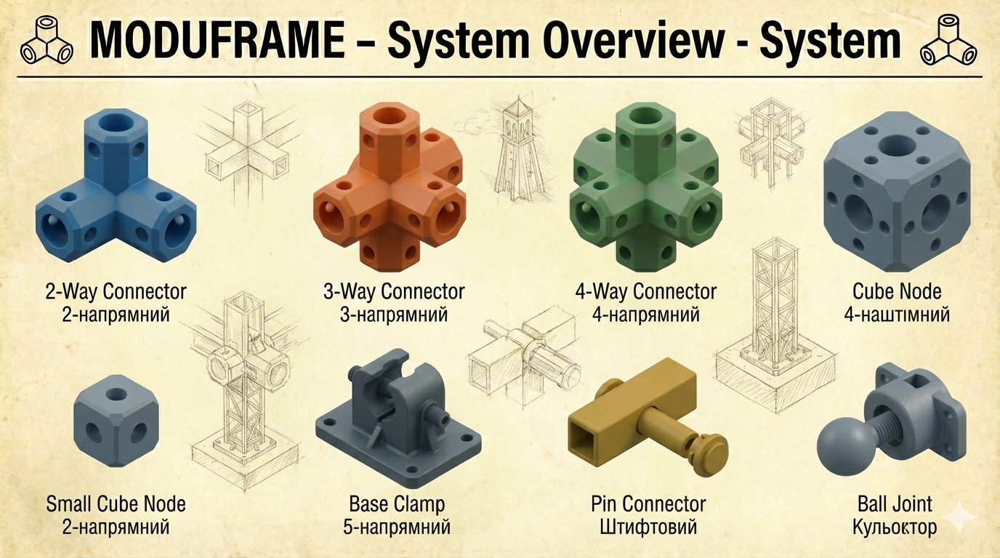
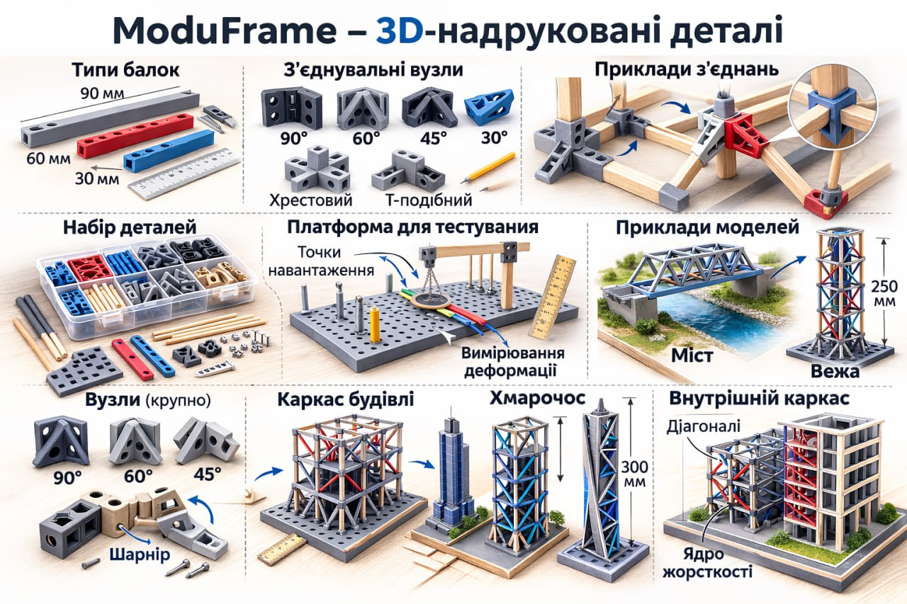

MODUFRAME
Відкрита інженерна екосистема для швидкого прототипування. Гібридний підхід: 3D-друк складних вузлів + доступні дерев’яні елементи.
Документація та STL моделіВізуалізація системи




Про систему
Гібридна логіка
Пластикові з’єднувачі — це високоточне ядро. Дерево (бамбук, суші-палички) — легкі та жорсткі несучі балки. Це економить до 80% часу друку.
Повна параметризація
Завдяки OpenSCAD ви можете змінити масштаб системи (10-40 мм) або адаптувати отвори під будь-який матеріал одним кліком.
IoT Оптимізація
Спеціальні кріплення для ESP8266/ESP32 та сенсорів дозволяють збирати корпуси для метеостанцій за лічені хвилини.
Бібліотека з 17 моделей
Конструкційні вузли
- Cube: Універсальне ядро 90°.
- Straight: Подовжувач балок.
- L / T-Shape: Плоскі рамні вузли.
- XYZ-Corner: Вершина для об'ємних боксів.
Спеціалізовані хаби
- Tripod: Опора 109.5° для стійкості.
- Angle 45/135: Для ферм жорсткості.
- Hex 60/120: Для стільникових структур.
- Mount-Plate: Платформа для плат та сенсорів.
Кабельний менеджмент
- Clip-Zip: Під нейлонову стяжку.
- Clip-Simple: Швидка організація дротів.
- Clip-Hook: Гачок для антен та петель.
Інструкція
1. Налаштування
Відкрийте .scad файл, увімкніть Customizer та оберіть мову UKR.
2. Параметри
Вкажіть System_Size (20 або 40) та оберіть тип паличок (Sushi, IceCream, Skewer).
3. Crush Ribs
Увімкніть Use_Crush_Ribs для фіксації елементів "на суху" без використання клею.
Створення деталей
Згенеруйте всю бібліотеку моделей за 60 секунд.
САЙТ
🔧 Що це за сайт
- онлайн-CAD без встановлення
- генератор 3D-моделей через код
- інструмент для параметричних деталей
- viewer + редактор в одному вікні
- Ти пишеш JS → одразу бачиш 3D-модель.
КОД ДЛЯ МОДЕЛЮВАННЯ
/**
* =========================================================================
* MODUFRAME V6.0 — JSCAD ПОВНИЙ РЕФАКТОРИНГ
* Порт з OpenSCAD V6.0
* Вимоги: @jscad/modeling >= 2.x
* =========================================================================
*/
const jscad = require('@jscad/modeling')
const { cube, cuboid, cylinder } = jscad.primitives
const { union, subtract, intersect } = jscad.booleans
const { hull } = jscad.hulls
const { rotate, translate, scale } = jscad.transforms
const { degToRad } = jscad.utils
// =========================================================================
// ПАРАМЕТРИ / PARAMETERS
// =========================================================================
const getParameterDefinitions = () => [
{ name: 'part_type', type: 'choice', caption: '🔩 Деталь / Part:',
values: [
'cube','straight_L','l_shape','t_shape',
'angle_30','angle_45','angle_60','angle_135','angle_150',
'hex_60','hex_120',
'xyz_corner','tripod','cross_5way','cross_6way',
'reducer','end_cap','pivot',
'clip_zip','clip_simple','clip_hook',
'mount_plate','wall_mount'
],
captions: [
'Куб','Прямий','Кут-Г','Кут-Т',
'Кут-30°','Кут-45°','Кут-60°','Кут-135°','Кут-150°',
'Гекс-60°','Гекс-120°',
'Вершина-XYZ','Тріпод','Хрест-5','Хрест-6',
'Редуктор','Заглушка','Шарнір',
'Кліпса-Стяжка','Кліпса-Тримач','Кліпса-Гачок',
'Платформа','Настінна'
],
default: 'cube'
},
{ name: 'u', type: 'choice', caption: '📐 Розмір системи (mm):',
values: ['10','20','40'], captions: ['10 mm','20 mm','40 mm'], default: '20'
},
{ name: 'chamfer', type: 'number', initial: 2.0,
min: 0.5, max: 5.0, step: 0.1, caption: 'Фаска / Chamfer (mm):' },
{ name: 'arm_mult', type: 'number', initial: 1.0,
min: 0.5, max: 3.0, step: 0.1, caption: '↔ Множник плеча / Arm Length ×:' },
{ name: 'mat', type: 'choice', caption: '🪵 Матеріал / Material:',
values: ['toothpick_2','skewer_3','coffee_stir','sushi_5','icecream_10x2','custom_round','custom_flat'],
captions: ['Зубочистка 2mm','Шпажка 2.4mm','Кавова паличка 5×1.1mm','Суші 5mm','Морозивна 10×2.2mm','Своє кругле','Своє плоске'],
default: 'coffee_stir'
},
{ name: 'custom_d', type: 'number', initial: 6.0, min: 1.0, max: 15.0, step: 0.1,
caption: 'Custom: діаметр (mm):' },
{ name: 'custom_fw', type: 'number', initial: 8.0, min: 2.0, max: 30.0, step: 0.5,
caption: 'Custom Flat: ширина (mm):' },
{ name: 'custom_fh', type: 'number', initial: 2.0, min: 0.5, max: 10.0, step: 0.1,
caption: 'Custom Flat: товщина (mm):' },
{ name: 'tol', type: 'number', initial: 0.15, min: 0.0, max: 0.5, step: 0.05,
caption: 'Допуск / Tolerance (mm):' },
{ name: 'blind', type: 'checkbox', checked: true, caption: 'Сліпий отвір / Blind Hole:' },
{ name: 'crush_ribs', type: 'checkbox', checked: true, caption: 'Crush Ribs (круглі):' },
{ name: 'depth_ratio',type: 'number', initial: 0.45, min: 0.3, max: 0.6, step: 0.01,
caption: 'Глибина отвору / Hole Depth Ratio:' },
{ name: 'bottom_flat', type: 'checkbox', checked: false,
caption: '🖨 Зрізати низ / Flatten Bottom:' },
]
// =========================================================================
// ГОЛОВНА ФУНКЦІЯ
// =========================================================================
const main = (p) => {
const u = parseFloat(p.u)
const c = p.chamfer
const armMult = p.arm_mult
const armLen = u * armMult
const tol = p.tol
const taper = 0.25
const isRound = !['coffee_stir','icecream_10x2','custom_flat'].includes(p.mat)
const baseD = { toothpick_2: 2.0, skewer_3: 2.4, sushi_5: 5.0, custom_round: p.custom_d }[p.mat] || 0
const holeD = baseD + tol
const flatW = { coffee_stir: 5.0, icecream_10x2: 10.0, custom_flat: p.custom_fw }[p.mat] || 0
const flatH = { coffee_stir: 1.1, icecream_10x2: 2.2, custom_flat: p.custom_fh }[p.mat] || 0
const flatTW = flatW + tol
const flatTH = flatH + tol
const hDepth = p.blind ? u * p.depth_ratio : u / 2 + 1
const cub = (sx, sy, sz) => cuboid({ size: [sx, sy, sz] })
const taperCyl = (d, depth) =>
translate([0, 0, -depth * 1.25],
cylinder({ height: depth * 2.5, radiusStart: d / 2, radiusEnd: (d - taper) / 2, segments: 32 })
)
const crushRibs = (d, depth) => {
if (!p.crush_ribs || d <= 2.0) return null
return union(
[0, 120, 240].map(a =>
rotate([0, 0, degToRad(a)],
translate([d / 2, 0, 0], cub(0.5, 0.5, depth * 3))
)
)
)
}
const roundHole = () => {
const cyl = taperCyl(holeD, hDepth)
const ribs = crushRibs(holeD, hDepth)
return ribs ? union(cyl, ribs) : cyl
}
const flatHole = () => {
const slot = (w, h) => hull(
translate([0, 0, -hDepth], cub(w, h, 0.01)),
translate([0, 0, hDepth], cub(w - taper, h - taper, 0.01))
)
return union(slot(flatTW, flatTH), slot(flatTH, flatTW))
}
const holeCut = () => isRound ? roundHole() : flatHole()
const holeX = () => rotate([0, degToRad(90), 0], holeCut())
const holeY = () => rotate([degToRad(90), 0, 0], holeCut())
const holeZ = () => holeCut()
const smartCore = () => {
const diag = (u - c) * Math.sqrt(2)
const baseCube = cub(u, u, u)
const cut = (rx, ry, rz, sx, sy, sz) =>
rotate([degToRad(rx), degToRad(ry), degToRad(rz)], cub(sx, sy, sz))
return intersect([
baseCube,
cut(45, 0, 0, u + 2, diag, diag),
cut(0, 45, 0, diag, u + 2, diag),
cut(0, 0, 45, diag, diag, u + 2)
])
}
const cleanArm = (len) => {
const holeOffset = p.blind ? len + armLen * 0.45 : len + u / 2 + 1
const arm = hull(
intersect([cub(0.1, u, u), cub(u, u, u)]),
translate([len, 0, 0], smartCore())
)
const h = translate([holeOffset, 0, 0], rotate([0, degToRad(90), 0], holeCut()))
return subtract(arm, h)
}
const connector = (rotsDeg) => {
const core = smartCore()
const arms = union(rotsDeg.map(r =>
rotate([degToRad(r[0]), degToRad(r[1]), degToRad(r[2])], cleanArm(armLen))
))
return subtract(
union(core, arms),
holeX(), holeY(), holeZ()
)
}
const applyBottomFlat = (geo) => {
if (!p.bottom_flat) return geo
return intersect([
geo,
translate([0, 0, u / 2], cub(u * 10, u * 10, u * 10))
])
}
const partCube = () =>
subtract(smartCore(), holeX(), holeY(), holeZ())
const partStraight = () => connector([[0,0,0],[0,180,0]])
const partLShape = () => connector([[0,0,0],[0,0,90]])
const partTShape = () => connector([[0,0,0],[0,0,90],[0,0,180]])
const partAngle30 = () => connector([[0,0,0],[0,0,30]])
const partAngle45 = () => connector([[0,0,0],[0,0,45]])
const partAngle60 = () => connector([[0,0,0],[0,0,60]])
const partAngle135 = () => connector([[0,0,0],[0,0,135]])
const partAngle150 = () => connector([[0,0,0],[0,0,150]])
const partXYZCorner = () => connector([[0,0,0],[0,0,90],[0,-90,0]])
const partTripod = () => connector([[0,-90,0],[0,19.47,0],[0,19.47,120],[0,19.47,240]])
const partCross5 = () => connector([[0,0,0],[0,0,90],[0,0,180],[0,0,270],[0,-90,0]])
const partCross6 = () => connector([[0,0,0],[0,0,90],[0,0,180],[0,0,270],[0,-90,0],[0,90,0]])
const partReducer = () => {
const small = 0.55
const core = smartCore()
const bridge = hull(core, translate([armLen * 1.5, 0, 0], scale([small, small, small], smartCore())))
const smallHole = translate([armLen * 1.5, 0, 0], rotate([0, degToRad(90), 0], holeCut()))
return subtract(union(core, bridge), holeX(), holeY(), holeZ(), smallHole)
}
const partEndCap = () =>
subtract(smartCore(), holeZ())
const partPivot = () => {
const pinD = Math.max(isRound ? holeD : flatTH, 3.0)
const gap = 0.4
const socketD = pinD + gap * 2 + 2.0
const halfArm = armLen / 2
const leftArm = translate([-halfArm, 0, 0], rotate([0, degToRad(180), 0], cleanArm(halfArm)))
const rightRaw = cleanArm(halfArm)
const socket = rotate([0, degToRad(90), 0], cylinder({ height: u + 2, radius: socketD / 2, segments: 32 }))
const rightArm = subtract(rightRaw, socket)
const body = subtract(
union(leftArm, rightArm, smartCore()),
holeX(), holeY(), holeZ()
)
const pin = translate([0, u * 2, 0],
subtract(
cylinder({ height: u - 1, radius: pinD / 2, segments: 32 }),
cylinder({ height: u + 1, radius: pinD * 0.2, segments: 32 })
)
)
return union(body, pin)
}
const partClip = (mode) => {
const ch = 12
const off = (isRound ? holeD / 2 : flatTH / 2) + 4
const base = isRound
? cylinder({ height: ch, radius: (holeD + 6) / 2, segments: 32 })
: cub(flatTW + 6, flatTH + 6, ch)
const bracket = translate([0, off, 0], cub(10, 8, ch))
const hook = mode === 3
? translate([5, off + 4, 0],
subtract(
cylinder({ height: ch, radius: 5, segments: 32 }),
cylinder({ height: ch + 2, radius: 3, segments: 32 }),
translate([-5, 0, 0], cub(10, 12, ch + 2))
)
)
: null
const body = union([base, bracket, ...(hook ? [hook] : [])])
const zipSlot = mode === 1 ? translate([0, off, 0], cub(6, 3, ch + 2)) : null
const openSlot = mode >= 2 ? translate([0, -10, 0], cub(12, 20, ch + 2)) : null
const cuts = [holeCut(), zipSlot, openSlot].filter(Boolean)
return subtract(body, ...cuts)
}
const partMountPlate = () => {
const base = union(partCube(), translate([0, 0, u / 2 + 1.5], cub(u + 10, u + 10, 3)))
const screws = union([-1, 1].flatMap(x =>
[-1, 1].map(y =>
translate([x * (u / 2 + 2), y * (u / 2 + 2), u / 2],
cylinder({ height: 10, radius: 1.6, segments: 32 })
)
)
))
return subtract(base, screws)
}
const partWallMount = () => {
const pw = u + 20, ph = u + 20, pt = 4
const sdx = (pw - 10) / 2, sdz = (ph - 10) / 2
const plate = translate([0, -(u / 2 + pt / 2), 0], cub(pw, pt, ph))
const body = union(partCube(), plate)
const screwHoles = union([-1, 1].flatMap(x =>
[-1, 1].map(z => {
const shaft = cylinder({ height: pt * 3, radius: 2.25, segments: 32 })
const head = translate([0, 0, pt / 2 - 1.5], cylinder({ height: 3.1, radius: 4.5, segments: 32 }))
return translate([x * sdx, -(u / 2 + pt), z * sdz],
rotate([degToRad(90), 0, 0], union(shaft, head))
)
})
))
return subtract(body, screwHoles)
}
const build = (name) => {
switch (name) {
case 'cube': return partCube()
case 'straight_L': return partStraight()
case 'l_shape': return partLShape()
case 't_shape': return partTShape()
case 'angle_30': return partAngle30()
case 'angle_45': return partAngle45()
case 'angle_60': return partAngle60()
case 'angle_135': return partAngle135()
case 'angle_150': return partAngle150()
case 'hex_60': return partHex60()
case 'hex_120': return partHex120()
case 'xyz_corner': return partXYZCorner()
case 'tripod': return partTripod()
case 'cross_5way': return partCross5()
case 'cross_6way': return partCross6()
case 'reducer': return partReducer()
case 'end_cap': return partEndCap()
case 'pivot': return partPivot()
case 'clip_zip': return partClip(1)
case 'clip_simple': return partClip(2)
case 'clip_hook': return partClip(3)
case 'mount_plate': return partMountPlate()
case 'wall_mount': return partWallMount()
default:
console.error(`⚠️ Невідома деталь: ${name}`)
return partCube()
}
}
return applyBottomFlat(build(p.part_type))
}
module.exports = { main, getParameterDefinitions }
Створення деталей в OpenSCAD
Windows (Batch)
@echo off
for %%P in (cube straight_L l_shape t_shape
angle_45 xyz_corner tripod reducer clip_zip) do (
openscad -o "STL/%%P.stl" -D "Part_Type=\"%%P\""
)
pause
Linux / macOS (Bash)
#!/bin/bash
parts=("cube" "tripod" "mount_plate")
for p in "${parts[@]}"; do
openscad -o "STL/$p.stl" -D "Part_Type=\"$p\""
done